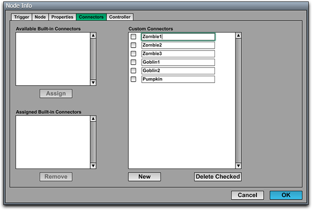
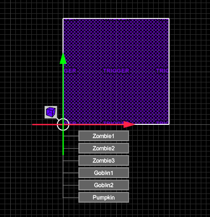

Connectors
{kind=link}

Every node in a world can have one or more connectors attached to it. A connector forms a link between the node that owns it and some other node in the world. Connectors are used for a variety of different purposes, such as connecting a portal to the zone that it leads to or connecting a node with a script controller to other nodes that the script operates on.
Creating Connectors
Connectors are added to (or removed from) a node under the Connectors tab in the Node Info window (shown in Figure 1). Each connector has a name of up to 15 bytes in length that is used to identify it. This identifier is displayed in the World Editor and the Script Editor to distinguish among different connectors attached to a node. To add a new connector to a node, simply click the New button and type in an identifier for the new entry that appears in the list of connectors.
Built-in Connectors
Some node types have built-in connectors that can activated under the Connectors tab of the Node Info window. As shown in Figure 1, a list of built-in connectors is displayed on the left side of the window (empty in this case). Selecting an available built-in connector and clicking on the Assign button causes the connector to appear in the assigned list. Connectors in the assigned list will show up in the editor as connector boxes that can be linked to other nodes. The names of built-in connectors always begin with a percent character (%).
The following table describes the built-in connectors for each type of node that defines them.
|
Node Type |
Connector |
Usage |
|
Zone |
|
Connected to a fog space to indicate that a particular fog space should be used in the zone. |
|
Zone |
|
Connected to an acoustics space to define the acoustical properties of the zone. |
|
Zone |
|
Connected to an illuminance space to indicate that a particular illuminance space should be applied to geometries in the zone. |
|
Portal |
|
Connected to a zone to specify the destination of the portal. This connector is assigned by default when a new portal is created. |
|
Light |
|
Connected to a shadow space to specify the maximum bounds of shadows cast by the light. |
|
Particle System |
|
Connected to an emitter for use by the particle system. |
|
Physics Node |
|
Connected to a physics space defining the boundary of the physics simulation. |
|
Joint |
|
Connected to nodes that are constrained through the physics joint. |
|
Cloth Geometry |
|
Connected to a field with a wind force assigned to it to indicate that the wind should affect the cloth simulation. |
|
Geometry |
|
Connected to a paint space to indicate that the geometry's material should use a particular paint texture. This connector is automatically created when a geometry is associated with a paint space using the command in the Paint Page, so it wouldn't normally need to be added manually. |
|
Path Primitive, Tube Effect |
|
Connected to the path that defines the shape of the geometry or effect. |
|
Instance |
|
Connected to a shadow space so that a light inside an instanced world can use a shadow space in the instancing world. The light must have the "Use shadow space in instancing world" box checked. |
|
Instance |
|
Connected to a paint space so that a geometry inside an instanced world can use a paint space in the instancing world. The geometry must have the "Use paint space in instancing world" box checked. |
{kind=link}

Connecting to Other Nodes
Each connector can be either unconnected or connected to one node. To specify the target of a connector in the World Editor, click on the Connect Tool (or press 5) and then select a node for which you want to set an outgoing connection (but don't select the target yet). The available connectors will appear in a list beneath the selected node, as shown in Figure 2. Click in a box to select a connector, and it will be highlighted to indicate that it's selected. Then select the target node and choose Connect Node from the Node menu (or just type Ctrl-L). You will see a line with arrowheads pointing from the connector to its target node. Connectors from multiple nodes (one connector each) can be selected by using the Shift key. This can be useful if, for instance, you want to connect multiple zones to the same fog space.
A connector can be broken by selecting it and choosing Unconnect Node from the Node menu (or typing Ctrl-U).